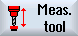

Procedure
The part program or ShopMill program to be processed has been created and you are in the editor.
|  | 1. | Press the "Measure tool" softkey in the vertical softkey bar. |
| | 2. | Press the "Drilling tool" softkey in the horizontal softkey bar. The input window "Measure: Tool" opens. |